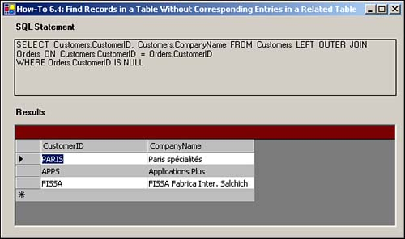

Note
Normally, if your database is set up with referential integrity correctly, as Northwind is, you won't have any invoices without customers assigned to them. |
I have a situation in which I need to find which clients don't have invoices. How do I do this?
To find out which records (customers) don't have corresponding records (invoices) in a related table, you have to have a better understanding of the types of joins that can be used between tables during queries.
Before looking at the joins, following is the T-SQL statement that will be used in this How-To:
SELECT Customers.CustomerID, Customers.CompanyName FROM Customers LEFT OUTER JOIN Orders ON Customers.CustomerID = Orders.CustomerID WHERE Orders.CustomerID IS NULL
You can use three types of joins to bring back different information. These join types include inner joins, left outer joins, and right outer joins.
This join displays records in which at least one record exists in each table for the joined field. This means that customers are displayed only if they have at least one invoice. If you want to see the CompanyName and OrderDate, the SELECT statement would be as follows:
SELECT Customers.CompanyName, Orders.OrderDate FROM Customers INNER JOIN Orders ON Customers.CustomerID = Orders.CustomerID
You use this join when you want to see all of the records in the first table, but only those records in the second table that have matching records in the first table. An example of this would be if some customers didn't have invoices; all the customers would appear, but only those invoices that had customers assigned to them would be displayed.
Note
Normally, if your database is set up with referential integrity correctly, as Northwind is, you won't have any invoices without customers assigned to them. |
The example SELECT statement for this will be used in the How-To. ON Customers.CustomerID = Orders.CustomerID WHERE Orders.CustomerID IS NULL
Remember, because you want only those customers without invoices, you need to check to see where Orders.CustomerID is NULL.
Note
Although it is not strictly necessary to check whether the Orders.CustomersID is NULL, make sure to check for a column that would not be NULL if a record were there. OrderID would be another good column to check. |
As you might have guessed by now, the right outer join is the opposite of the left outer join. Instead of listing all the customers and only those invoices that have customers, the right outer join shows you all records in the second table (invoices) and only those records from the first table (customers) in which there is a matching record on the joined column (CustomerID).
One of the ways that the right outer join is used is to find bad data, such as non-relational data that could result from importing data from other systems. Use a SELECT statement similar to the one used for the left outer join type:
SELECT Customers.CustomerID, Customers.CompanyName FROM Customers RIGHT OUTER JOIN Orders ON Customers.CustomerID = Orders.CustomerID WHERE Customers.CustomerID IS NULL
You will notice that instead of testing for Orders.CustomerID being NULL, you are checking to see if Customers.CustomerID is NULL.
Open and run the Visual Basic .NET-Chapter 6 solution. From the main form, click on the button with the caption How-To 6.4. When the form loads, you will see the SQL String displayed with the data grid displaying customers who don't have orders (see Figure 6.5).
Create a Windows Form. Then place the controls listed in Table 6.4 with the following properties set, as displayed in Figure 6.5.
|
Object |
Property |
Setting |
|---|---|---|
|
Label |
Text |
SQL Statement |
|
Label |
Name |
lblSQLString |
|
Label |
Text |
Results |
|
DataGrid |
Name |
dgResults |
Add the following code in Listing 6.9 to the Load event of the form. (Double-click on the form to bring up the code.) The only difference in this routine from the previous How-To is the SELECT statement, which is described in the "Technique" section.
Private Sub frmHowTo6_4_Load(ByVal sender As System.Object,
ByVal e As System.EventArgs) Handles MyBase.Load
'-- Build the SQL String
Dim strSQL As String
strSQL &= "SELECT Customers.CustomerID, Customers.CompanyName "
strSQL &= "FROM Customers LEFT OUTER JOIN Orders "
strSQL &= "ON Customers.CustomerID = Orders.CustomerID" & vbCrLf
strSQL &= "WHERE Orders.CustomerID IS NULL"
'-- Store the SQL String
Me.lblSQLString.Text = strSQL
'-- Use the SQL String to build the data adapter and fill the data table.
Dim odaResults As New OleDb.OleDbDataAdapter(Me.lblSQLString.Text, _
BuildCnnStr("(local)", "Northwind"))
Dim dtResults As New DataTable()
Try
odaResults.Fill(dtResults)
Catch excp As Exception
MessageBox.Show(excp.Message)
Exit Sub
End Try
'-- Assign the data table to the data grid's DataSource property
Me.dgResults.DataSource = dtResults
End Sub

The majority of the time, you will be using the inner join rather than the outer joins. However, sometimes outer joins will be necessary, so you should experiment with them and get comfortable with them.